Light enters the emulsion.
A colour negative is three light-sensitive layers stacked on a clear base. Blue is recorded on top, then a yellow filter stops any remaining blue from going deeper. Green and red pass on.
Halation is the red-orange glow film puts around the brightest lights: beautiful, and hard to get right. Halo Pro forms it from the light already in the file, so the glow lands beside the lights and not on evenly lit surfaces.
Stand-alone Mac app for colour graders and photographers, macOS 14 or later on Apple Silicon. Free for personal work, with every control. 20 euros once for paid work.
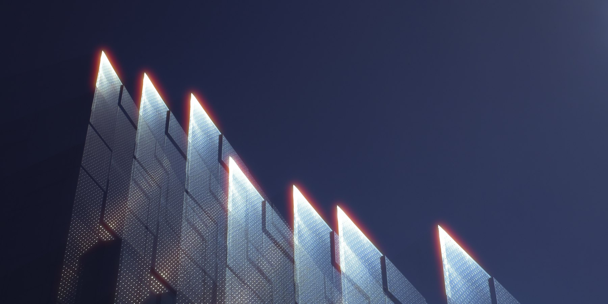
On film, light that the emulsion doesn’t absorb goes into the clear base, reflects off the back and exposes the film again, from behind.
The red-sensitive layer is closest to the base, so the return is red first, and orange where it reaches the green-sensitive layer above. The top layer and the yellow filter stop blue, so the blue in a light makes no glow.
Format is the film size the frame stands for, Super 8 to 4x5. The halo is one width on the film, so 35 mm, the Default, gets a thin rim and 16 mm a wide one.
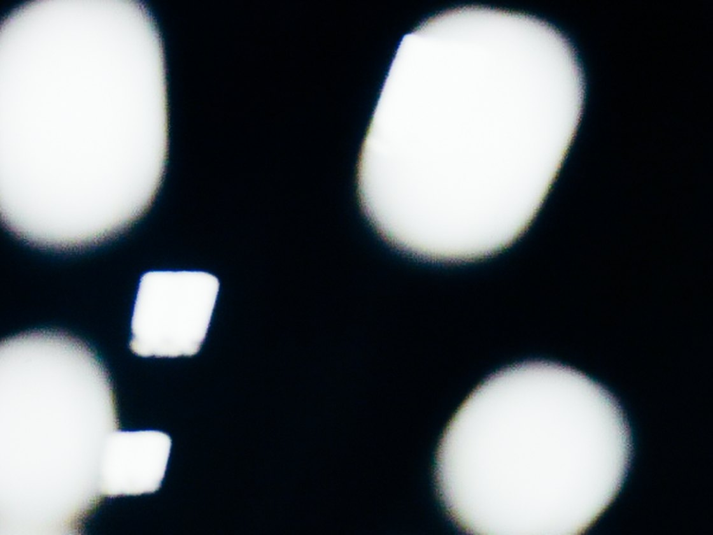
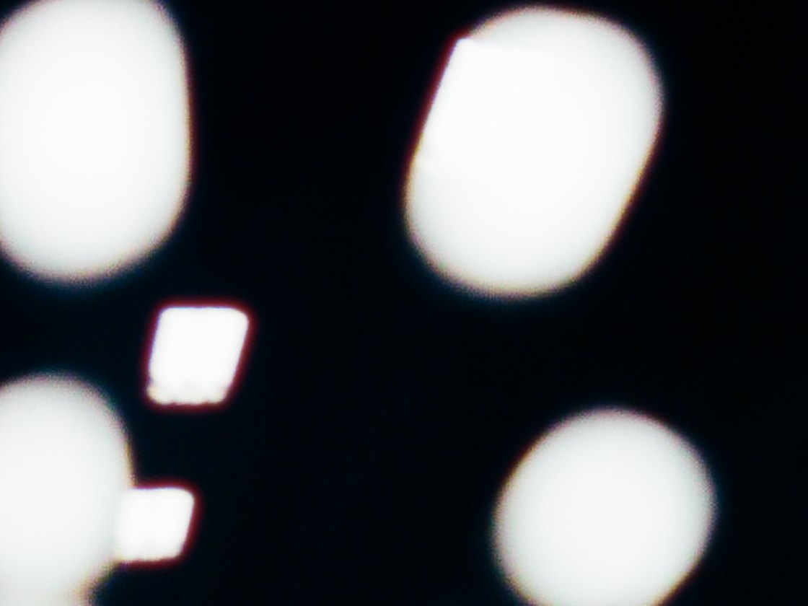
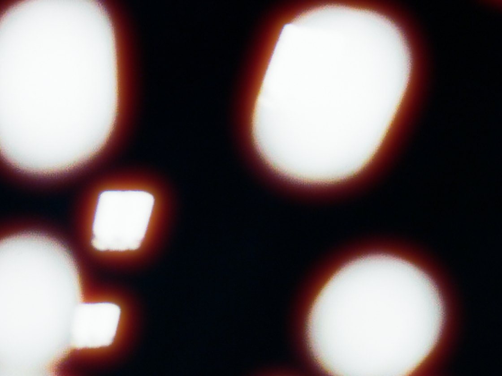
Amount sets how much light comes back. Format and Size set how far it spreads.

No backing: light reflects off the back of the base and comes back up into the emulsion as the red halo. This is CineStill.
A colour negative is three light-sensitive layers stacked on a clear base. Blue is recorded on top, then a yellow filter stops any remaining blue from going deeper. Green and red pass on.
The emulsion absorbs most of the light, never all of it. A fixed share of every tone leaves its underside, scattered at every angle, into roughly 0.13 mm of clear plastic. Under an ordinary tone that share never shows. Under a lamp many stops brighter than its surroundings, the same share is enough to expose the film again.
In Halo ProStarts at · Softness of start: where a file's lights start to glow, standing in for the stops above white an 8- or 16-bit file has clipped
Where the base meets air, light that hits the back more obliquely than the critical angle — about 42° from straight down, for n ≈ 1.5 — can't get out. It's totally reflected and heads back up at the same angle, away from where it came in. Light closer to straight down mostly escapes. Halation starts at this boundary.
In Halo ProSize · Format · Roll-off: how far the glow travels, measured against the film format you pick
The returning light enters the emulsion from below, and the first layer it meets is the red-sensitive one. It lands in a ring around the source, at a distance set by the base thickness. Where the return is strong, red fills up first and green follows, so the hottest part of the halo reads orange and the faint edge stays red.
In Halo ProGreen return: how orange the strong glow turns
Still film has an anti-halation layer that soaks up most of it. Motion-picture stock has long used remjet — a carbon-black coat on the back of the base. Strip the remjet, as CineStill does, and the mirror is back at full strength. The diagram switches to remjet here.
In Halo ProAmount: how much light comes back, from none (a perfect backing) to twice the built-in look
Ring radius from base thickness t and critical angle θc.
≈ 2 · 0.13 · 0.89 ≈ 0.23 mmFractions of a millimetre on the film — about 1 % of a 35 mm frame's short side — and visible because the source is so much brighter than its surroundings.
That ring is what a single point sends back. Most lights are wider than the ring, so the rings from all their points overlap and fill in: a bright core and a soft tail. The dark gap only shows around pinpoints, such as stars and far-off street lamps. Halo Pro draws the filled-in shape.
In a 32-bit file the glow doubles with every stop above white, as on film (measured).
The halation adds light only where the glow spreads past the edge of a bright area.
The usual shortcut for halation is to blur everything bright in the frame red-orange and lay it on top: a red blur. Here it turns the sky pink; on a campaign it does the same to a grey backdrop or a white shirt.
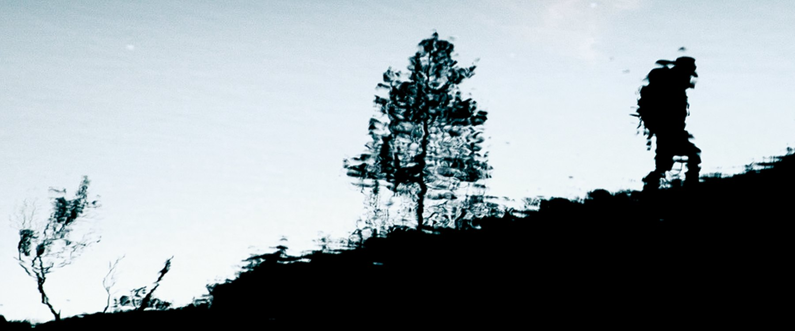
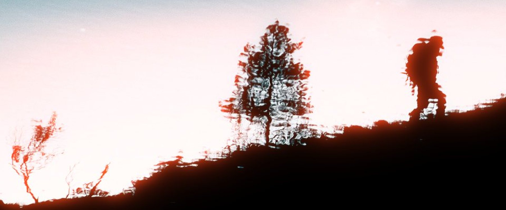
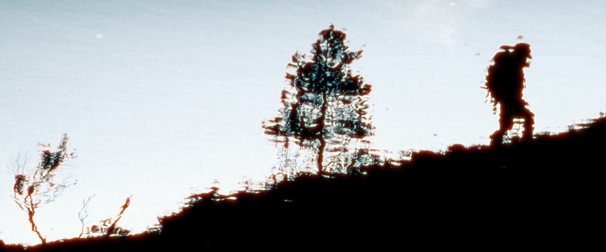
On a backlit portrait the glow is in the hair, where the light comes through, and in a thin line where the dark jacket meets the bright lights behind it. The helmet, the sky and the blue lights measure the same as opened.
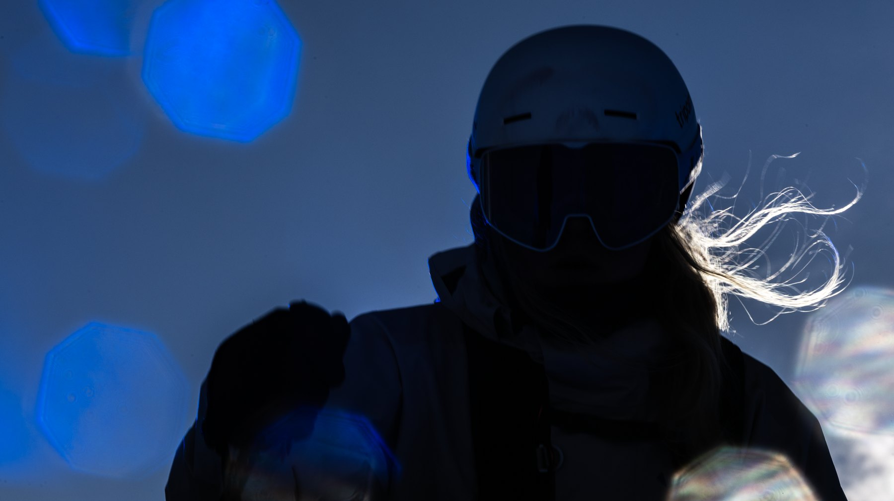

That is the glow on its own. The Default look also sets Warmth on highlights to 1, which turns bright surfaces a touch warmer; at 0, as in these pictures, even areas stay as they were. The measurements on test charts are in the technical note.
Many photographers keep a mist filter on the lens: glass that scatters highlight light into the shadows and lowers contrast. On set its strength is chosen once; here it is the Density and Spread sliders, changed until you export.
Halation is a tight rim at the light; mist is a wide, soft veil around it. Mist runs after the halation, so it softens the glow too.
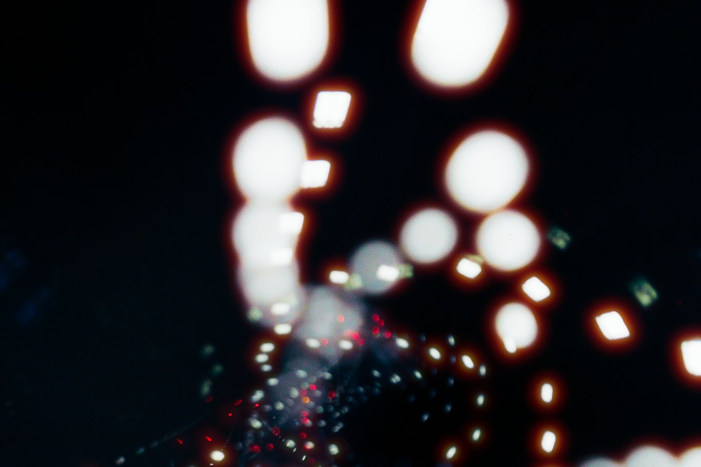
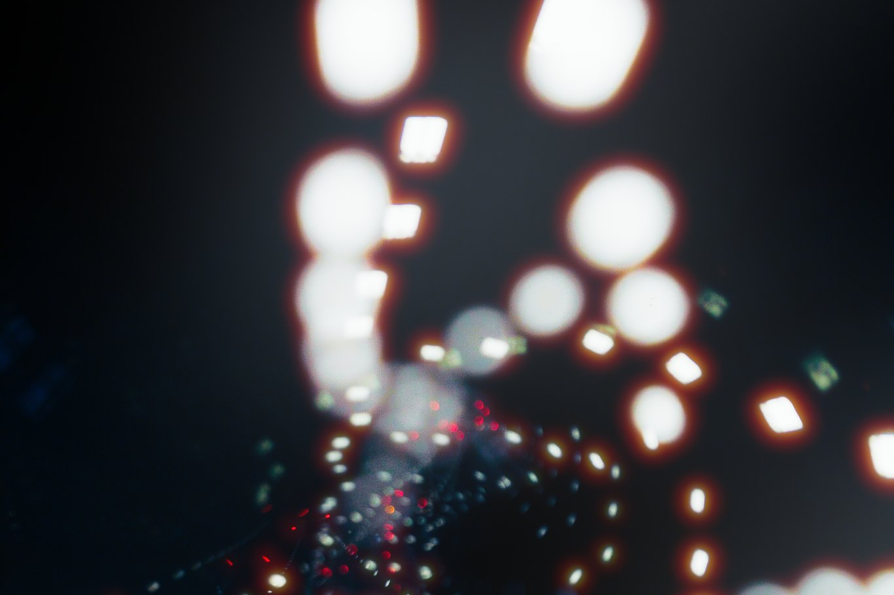
Film can’t choose where or how it glows; in an edit you can. Amount runs 0 to 2 and Size 0.25 to 16.
Color mix moves the glow from film’s red-orange to the picked Glow color.
Type saved as a PNG or TIFF glows the same way. Transparency isn’t kept, so put the type on its background first.
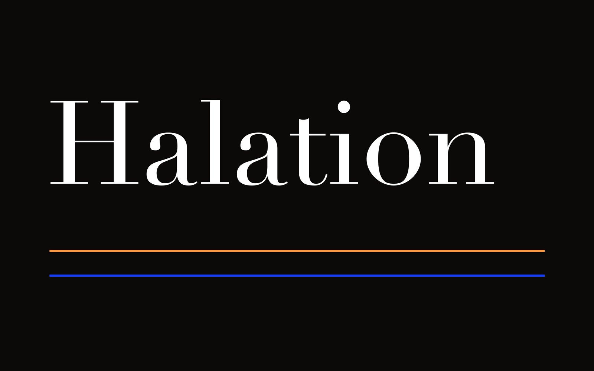
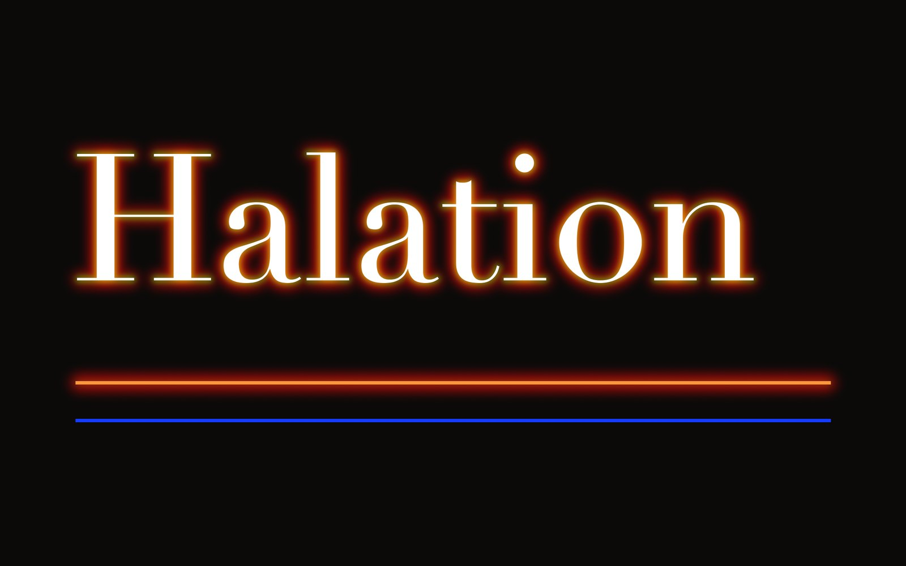
A bright sky is a light too, and glows into whatever stands in front of it. With Advanced on, Luminance Range, Sky Protection and Color Mask limit where the glow comes from, each with a view to check.
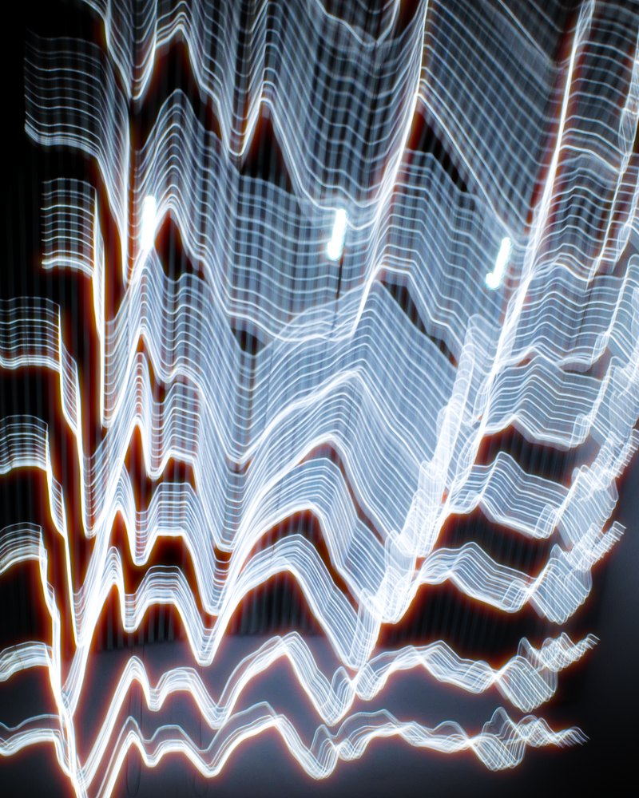
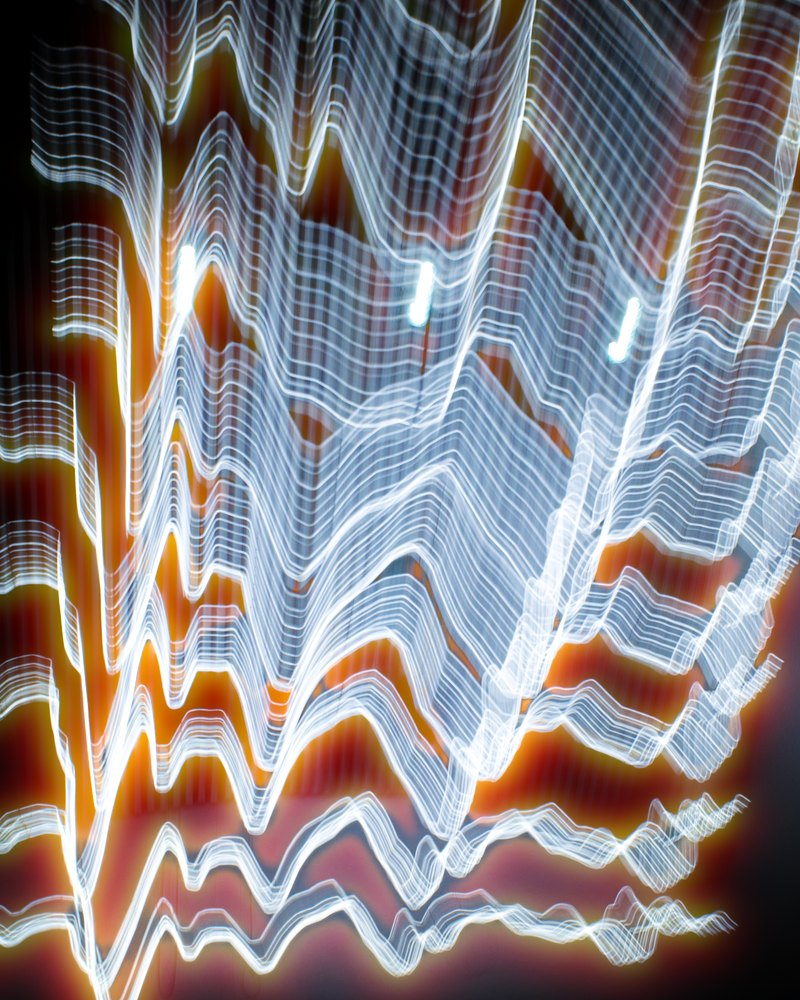
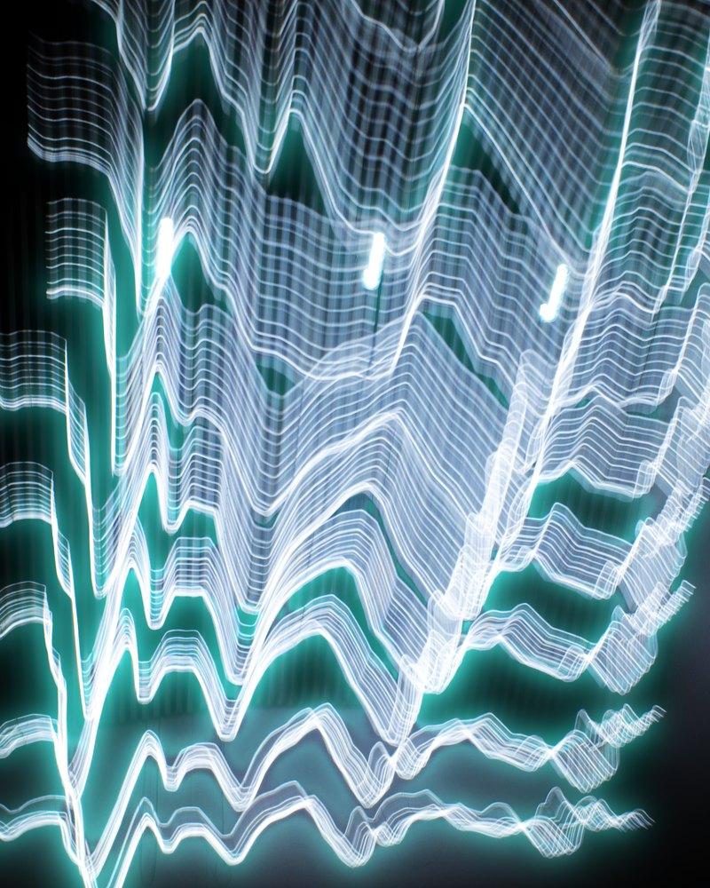
Halo Pro goes in wherever the workflow has a TIFF, at the end or in the middle of a grade. An RGB file keeps its colour profile on the way in and out, and the maths in between is 32-bit float.
From Lightroom Classic, Edit In hands over a TIFF and Save and return writes a 16-bit TIFF back.
On the 16-bit TIFF from the raw developer or the retouch, before grain.
A 32-bit float TIFF holds light above white, and there a sun glows more than a white shirt. A 32-bit float export keeps that light, unless a LUT after the mist, or Bloom, clips it.
Batch Mode takes up to 500 files, each with its own settings; Apply to All copies one look across the set.
One .cube LUT sits before the halation or after the mist. The round trip and Batch Mode need Pro.
Add Halo Pro once in Lightroom Classic as an additional external editor. Then right-click a photo, Edit In, Halo Pro: Lightroom hands over a TIFF, you set the look, and Save and return writes a 16-bit TIFF back with its metadata. One photo at a time; for a set, export TIFFs from Lightroom, run them through Batch Mode and import the results back.
Lightroom Classic › Settings › External Editing › Additional External Editor: choose Halo Pro.app, then TIFF, ProPhoto RGB, 16-bit, compression None or ZIP.
Loading stops if less than 1.5 GB of memory is free. Cmd+C / Cmd+V copy a look between photos. Export All writes every photo with its own settings and never overwrites a file: a name that's taken gets a number.
16-bit TIFF and PNG are read at 16 bits; 32-bit and half-float TIFFs open too. JPEG, BMP and WebP at 8 bits. For raw files, send a 16-bit TIFF from your raw editor, or let Lightroom Mode (Pro) do the round trip. Transparency isn’t kept: transparent areas show the colour stored under them.
PNG 8 or 16-bit. JPEG at quality 95, full colour resolution. 8-bit files are dithered so skies don't band.
The glow and the mist look the same whether a photo is saved in sRGB, Display P3, Adobe RGB or ProPhoto RGB. The preview is colour-managed to your screen, and the export keeps the profile. ProPhoto RGB can be kept or converted to sRGB on import.
With a bundled ExifTool. If a file's camera metadata can't be copied, Halo Pro says so.
Before halation or after mist, with an intensity slider. Saved inside presets. The glow is always measured on your photo as you opened it.
The glow is a share of the picture, so the quick preview and the export glow alike. Accurate (P) renders at full resolution for a true 1:1.
The glow, mist and LUT run on the GPU. A 12-megapixel export takes about 0.9 s on an M3 Max (1.x: 1.2–1.7 s).
One payment, no subscription. A digital download has no refunds.
€0
Personal use. Every control and mask view, LUTs and presets, full-resolution export up to 32-bit float. A licence screen at each launch. No Lightroom Mode, no Batch Mode.
Download€20, once
Paid work, for one person. Adds Lightroom Mode (Edit In, Save and return) and Batch Mode.
Buy the Pro licence€60, once
Studios and companies, for several people. Everything in Halo Pro.
Buy the Organisation licenceRequiresmacOS 14 Sonoma or later on a Mac with Apple Silicon (M1 or newer). Up to 100 MP and 500 MB per file. Signed, and notarised by Apple.
BetaHalo Pro 2.3 is a beta, and updates are free. Two known limits: very fine diagonal stripes (blinds, grilles) can show a faint moiré in the glow, and very big glows (Size above about 5) can land unevenly on faces and trees.
InstallOpen the DMG from Gumroad and drag Halo Pro to Applications. To activate Pro, enter the licence key from your Gumroad download page under Settings › Help › Enter License Key. It's checked online once, then works offline.
Upgrading2.3 is a free update for everyone who has 1.x or an earlier 2.x beta: it is in your Gumroad library, and your key still works. Looks saved in 1.x keep their mist, LUT and other settings and start with the new glow, once; the originals are kept.
Bug reportsSettings › Help › Report Bug copies a report with the log; paste it into an email to alric.ljunghager@gmail.com.